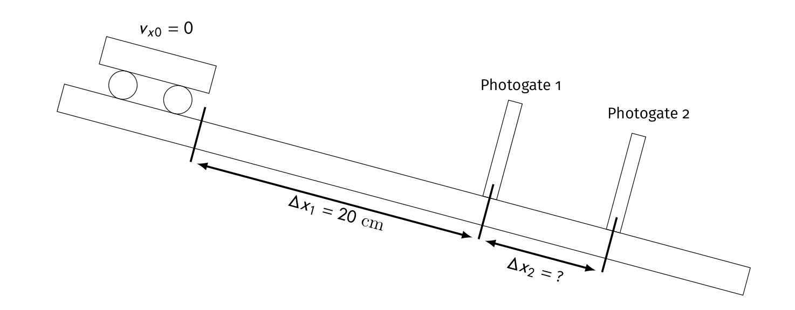

layout: true <div class="my-header"><img src="images/scsdLogo.png" style="height: 70px;"/></div> --- ##.gray[2021.12.07] .blue[Regents Physics] .red[Agenda] .qotd[❓of the üìÖ: Would you rather be Instagram famous, Tik Tok famous, or not famous at all?] 1. Problem-Solving Day: - Porter Packet: + Finish Elevator (p. 77 & 78) + 4.2 Newton's Second Law Problem Solving - Regents Questions: + Packet, skip friction questions Up Next: - Friction Lab Tomorrow --- ##.gray[2021.12.03] .blue[Regents Physics] .red[Agenda] .qotd[❓of the üìÖ: What reality TV show would you star in?] 1. Board Meeting Fan Cart Lab 2. Regents Physics's Second Law of Forces 3. Elevator Problems --- ##.gray[2021.12.02] .blue[Regents Physics] .red[Agenda] .qotd[❓of the üìÖ: Is it OK to ask the genie for infinite wishes?] 1. Finish Lab 2. Whiteboard Results 3. Board Meeting & Creating the General Model --- ##.gray[2021.12.01] .blue[Regents Physics] .red[Agenda] .qotd[❓of the üìÖ: What song do you put on when you want to get pumped?] 1. Finish Ramp Lab 2. Regents Ramp Problems 3. Fan Cart Lab: Unbalanced forces --- #Fan Cart Lab - Prelab Using any of our lab equipment... 1. Determine if your cart accelerates constantly -- and if so, determine the acceleration. - *Note Use the "Hubbs Method" - an easy method that you can repeat many times* --- #Fan Cart Lab Essential Questions: 1. How does mass affect the acceleration of your fan cart for a fixed constant force? 2. How does the net force on your fan cart affect its acceleration for a fixed mass? --- ##.gray[2021.11.29] .blue[Regents Physics] .red[Agenda] .qotd[❓of the üìÖ: What is your favorite color üåà?] 1. Forces on a ramp pivot 2. Inclines Regents Practice --- ##.gray[2021.11.23] .blue[Regents Physics] .red[Agenda] .qotd[❓of the üìÖ: What is your favorite food from the Thanksgiving meal?] 1. Finish Spring Force Lab 2. Whiteboard Spring Force Lab & Board Meeting 3. Use a spring to predict mass of unknown object 4. Forces on a Ramp Pivot --- ##Applying the Model Use one of your springs to measure the mass of a random object in the room... On your whiteboard: 1. Draw the free body diagram for massive object 2. Write Equation for Sum of the forces 3. Substitute in equations for forces in your equation 4. Plug-in and solve for the unknown mass 5. Compare value to electronic scale measurement --- ##.gray[2021.11.22] .blue[Regents Physics] .red[Agenda] .qotd[❓of the üìÖ: What is one destination on your bucket list?] 1. Finish Gravity Lab - Whiteboard and discuss 2. Spring Force Lab --- #Spring Force **Essential Question**: How does the elongation (stretch) of your spring relate to the amount of force applied to the spring? 1. Collect data from both springs (small spring and ceiling spring) 2. Use different masses and your knowledge about the weight of an object to determine the force on your spring --- ##.gray[2021.11.18] .blue[Regents Physics] .red[Agenda] .qotd[❓of the üìÖ: Would you rather be a superhero or super villain?] 1. Finish Card Sort 1. Motion maps 2. Select & Fill out Interaction Diagrams 3. Match & Label Free Body Diagrams 4. Match and Label Vector Addition Diagrams 2. Gravity Lab 3. Spring Force Lab --- #Gravity Lab **Essential Question**: *How does the mass of a hanging object compare to the force of gravity acting on that object?* --- #Spring Force **Essential Question**: How does the elongation (stretch) of your spring relate to the amount of force applied to the spring? 1. Collect data from both springs (small spring and ceiling spring) 2. Use different masses and your knowledge about the weight of an object to determine the force on your spring -- Board Meeting: - What was the mathematical relationship? - What does the slope represent? (the [y-variable] changes by [slope] [y units] for every 1 [x units] of [x variable]) - What does the intercept represent? Is is negigible or non-negligible? --- #Spring Force ##$$|\vec{F_s}| = k|\vec{x}|$$ --- #Test the model: You want to use your spring as a mass measuring device. On a whiteboard... 1. Derive an expression the for the mass `\(m\)` of a unknown hanging mass in terms of the stretch `\(x\)` of your spring, the spring constant `\(k\)` and any known physical constants. 2. Hang something in the classroom of unknown mass on one of your springs, use the derivation to determine the mass of that object. (Note: use 9.8 for `\(g\)`) 3. Check your results using the electronic balance. --- ##.gray[2021.11.17] .blue[Regents Physics] .red[Agenda] .qotd[❓of the üìÖ: Road trip or 'staycation'?] 1. Do Now: Vector Practice - Regents Questions 2. Force Diagrams Notes 3. Force Diagrams Card Sort --- ##.gray[2021.11.10] .blue[Regents Physics] .red[Agenda] .qotd[❓of the üìÖ: How often do you dance?] 1. Tug-of-War Simulation 2. Dueling Fan Carts 3. Force Diagarms --- ###Tug-of-War Simulation [Simulation Link](https://phet.colorado.edu/sims/html/forces-and-motion-basics/latest/forces-and-motion-basics_en.html?screens=1) Note: check all 3 boxes in the top right True/False: Determine whether each of the following statements are true. Support your claims with evidence and examples. (Remember that you can add/remove people while the cart is moving.) 1. A person's location on the rope matters. 2. Different combinations of people can produce the same sum of forces. 3. The sum of the forces on the cart is always equal to the addition of the individual forces. 4. It is impossible for the cart to accelerate to the left if there are people pulling it to the right. 5. The side with the bigger person will always win. 6. The side with more people will always win. 7. It is impossible to make the cart decrease in speed. 8. It is impossible to make the cart move at a steady speed. 9. The cart will always move in the direction of the sum of the forces. 10. If the sum of the forces is zero, the cart must be at rest. --- ##Tug-of-War Simulation Summary: - Make an argument (claim-evidence-reasoning) for how forces/combinations of force lead to: + Constant Velocity + Acceleration --- ##.gray[2021.11.09] .blue[Regents Physics] .red[Agenda] .qotd[❓of the üìÖ: What was your childhood dream job? Is it still your dream job?] 1. Interaction Stations 2. Defining Force 3. Dueling Fan Carts 4. Force Diagrams --- #Interaction Stations ##Contact Interactions Interaction between two objects that results in **compression**, **tension** or **shearing**. -- **Compression** ➡ Squishing a material together -- **Extension** ➡ Stretching a material -- **Shearing** ➡ Pulling surfaces parallel to each other --- class:center, middle # A ***force*** is an interaction between two objects. --- #Interaction types - **Gravitational Force** `\(\vec{F}_g\)` (Long Range) ➡ Attractive force between all objects with mass -- - **Normal Force** `\(\vec{F}_N\)` (Contact, Compression) ➡ "Perpendicular Force" occurs because atoms are compressed and want to return to original position. **Always perpendicular to surfaces in contact** -- - **Spring Force** `\(\vec{F}_s\)` (Contact, Stretch or Compression) ➡ Spring is stretched or compressed and wants to return to "natural" length -- - **Tension** `\(\vec{F}_T\)` (Contact, Stretch) ➡ Atomic Structure is stretched and wants to return to natural length -- - **Friction** `\(\vec{F}_f\)` (Contact, Shear) ➡ Irregular surfaces interlock to slow or prevent sliding of two surfaces relative to eachother **Always parallel to the surfaces in contact** -- - **Drag** `\(\vec{F}_D\)` (Contact) ➡ Fluid/gas Friction, resists objects motion through a fluid/gas -- - **Bouyant Force** `\(\vec{F}_B\)` (Contact) ➡ Fluid/Gas Normal Force -- - Electrostatic Force `\(\vec{F}_e\)` (Long Range) - Attractice or resistive force because objects have charge -- - Magnetic Force `\(\vec{F}_M\)` (Long Range) - Attractive or repulsive force because of moving charge --- ##.gray[2021.11.08] .blue[Regents Physics] .red[Agenda] .qotd[❓of the üìÖ: What was your childhood dream job? Is it still your dream job?] 1. Hand Back Test 2. Test Corrections 3. Dueling Fan Carts --- #Test Corrections 1. For each problem you got wrong: What type of mistake was it? - Conceptual, Calculation, Comprehension, Clueless or Careless? 2. For each problem you got wrong: What did you learn from this mistake? - I.e. the concept, to be careful with signs, to read the directions etc 3. For each problem you got wrong: Fix the mistake - solve the problem correctly. SHOW ALL WORK 4. A summary paragraph of what you learned and how you can improve for future tests and assessments. --- ##.gray[2021.10.28] .blue[Regents Physics] .red[Agenda] .qotd[❓of the üìÖ: What‚Äôs the longest trip you‚Äôve been on?] 1. Finish Bowling Ball Discussion 2. Finish Ramp Practical with group 3. Test Review: - Worksheets: + Defining motion (Skip 2D Problems) + Motion Graphs + Horizontal Kinemmatics (old packet) - Answers Posted on Canvas: Modules üëâüèª Motion - Kinemtics üëâüèª Kinematics Test Review - Process: Work through some problems, check answers, ask Porter Questions --- ##.gray[2021.10.28] .blue[Regents Physics] .red[Agenda] .qotd[❓of the üìÖ: Who is your celebrity crush?] 1. Correct Old Quiz & Ask Questions 1. Take Today's Quiz 2. Finish Photogate lab 3. Finish 2.5 (page 41-42) in Porter Packet --- ##.gray[2021.10.28] .blue[Regents Physics] .red[Do Now] Try on your own first, then collaborate with your table *Imagine that a sprinter accelerates from rest to a maximum speed of 10.8 m/s in 1.8 s. In what time interval will he finish the 100-m race if he keeps his speed constant at 10.8 m/s for the last part of the race? What assumptions did you make?* --- ##.gray[2021.10.28] .blue[Regents Physics] .red[Agenda] .qotd[❓of the üìÖ: What animal would you want for a non-traditional pet? (i.e. not a dog, fish or cat)] 1. Do Now 2. Ramp Practical 3. Regents Practice HW: - Quiz tomorrow - Video Consent form for Miss Leuci Note: Motion Test 11/4 --- ##Ramp Practical .center[] --- ##.gray[2021.10.27] .blue[Regents Physics] .red[Do Now] Solve the following using the equations on the board... 1. An astronaut drops a hammer from 2.0 meters above the surface of the Moon. If the acceleration due to gravity on the Moon is 1.62 meters per second`\(^2\)`, how long will it take for the hammer to fall to the Moon‚Äôs surface? 2. A car traveling at a speed of 13 meters per second accelerates uniformly to a speed of 25 meters per second in 5.0 seconds. Calculate the magnitude of the acceleration of the car during this 5.0-second time interval. 3. The driver of a car moving with a velocity of 15 meters per second made an emergency stop on a straight horizontal road. The wheels locked and the car skidded to a stop. The marks made by the rubber tires on the dry asphalt are 16 meters long, and the car‚Äôs mass is 1200 kilograms. What is the car's acceleration while skidding to a stop? --- ##.gray[2021.10.27] .blue[Regents Physics] .red[Agenda] .qotd[❓of the üìÖ: What is the best board game?] 1. Do Now 2. Using Equations in Physics - GUESS: **G**ivens, **U**nknowns, **E**quations, **S**ubstitution, **S**olve 3. Veggie Time ü•ïü•¶: Regents Practice HW: **Reminders - video form for Miss Leuci** --- ##.gray[2021.10.25] .blue[Regents Physics] .red[Agenda] .qotd[❓of the üìÖ: Where‚Äôs your favorite place to nap? üí§üò¥üí§] 1. Quiz - Friends without Pens - Take quiz on own 2. Ranking Task in Packet --- ##.gray[2021.10.21] .blue[Regents Physics] .red[Agenda] .qotd[❓of the üìÖ: Favorite halloween candy? üç¨üç≠üç´] 1. How far during "LOL" 2. Physics Equations HW: - Quiz Monday - VT Graphs & Word Problems --- ##How Far? **This is a hypothetical** (because obviously none of you text and drive, or will text and drive) You are driving down Maple Hill Road when you get a text from your friend. You pick up your phone, read the text, and answer with "LOL". When you put your phone down, you see an object in the road and slam on the brakes to stop. **How far do you travel during these events?** On a whiteboard present your solution. You should include: - Assumptions - Diagrams - Calculations and your solution should be clear --- ###.gray[2021.10.18] .blue[AP Physics] .red[Do Now] .left-column[The position-time graph shown represents the motion of two children, Ariel and Byron, who are moving along a narrow, straight hallway. .center[<img src="images/Byronariel.jpg" width = "300 px"/>] **Complete this on your own in your notebook. Then compare with your table once *everyone* is finished.** ] .right-column[1. Do either of the children ever change direction? If so when does this happen? Explain your reasoning. 2. Are the two children ever at the same position along the hallway? If so when does this happen? Explain your reasoning. 3. Do the two children ever have the same speed? If so when does this happen? Explain your reasoning. 4. Doo the two children ever have the same acceleration? If so when does this happen? Explain your reasoning.] --- ##.gray[2021.10.18] .blue[AP Physics] .red[Agenda] .qotd[❓of the üìÖ: Cats üêà or dogs üêï?] 1. Do Now 2. VT Graphs - Finish Porter Packet 2.3 3. Solving Problems with VT Graphs --- .gray[**2021.10.15**] .blue[**Regents Physics] - .red[DO NOW**] A motion sensor is used to create the graph of a student‚Äôs horizontal velocity as a function of time as the student moves toward and away from the sensor, as shown above. The positive direction is defined as the direction away from the sensor. .left-column[.center[<img src="https://assets.learnosity.com/organisations/537/VH922720.g02.png" width = "500 px"/>] ] .right-column[Which of the following describes the student‚Äôs final position `\(x_f\)` in relation to the starting position `\(x_0\)` and the student‚Äôs average horizontal acceleration ax between 0.0‚Äâs and 3.0s ? 1. Position `\(x_f\)` is farther away from the sensor than `\(x_0\)` , and `\(a_x\)` is positive. 2. Position `\(x_f\)` is farther away from the sensor than `\(x_0\)` , and `\(a_x\)` is negative. 3. Position `\(x_f\)` is closer to the sensor than `\(x_0\)` , and `\(a_x\)` is positive. 4. Position `\(x_f\)` is closer to the sensor than `\(x_0\)` , and `\(a_x\)` is negative. ] --- ##.gray[2021.10.14] .blue[AP Physics] .red[Agenda] .qotd[❓of the üìÖ: Would you rather be a dragon or own a dragon? üê≤üêâ] 1. Do Now 2. Finish Up Linearization Lab - Writing the Equations Review - Linearizing our XT Graph from Changing Speed Lab 3. Porter Packet 2.3 4. Problem-Solving with VT Graphs --- #.gray[2021.10.13] .blue[Regents Physics] .red[Agenda] .qotd[❓of the üìÖ: If aliens üëΩ do exist, would you want to meet them?] 1. Finish Stations Labs 2. Linearizing - What is it? - Why do we do it? 3. Linearize your graphs, write equation, share 4. Linearize XT Graph from old pivot --- #.gray[2021.10.12] .blue[Regents Physics] .red[Agenda] .qotd[❓of the üìÖ: Who is the most competitive person you know?] 1. Stations Lab --- #.gray[2021.10.08] .blue[Regents Physics] .red[Agenda] .qotd[❓of the üìÖ: What are you best at fixing?] 1. 2.1 Accelerated Motion Representations 1. Check answers with simulation 2. Try Simulation Challenges 2. Finish Area Worksheet - Whiteboard Face off 3. Problem-solving with VT Graphs --- ##.gray[2021.10.06] .blue[Regents Physics] .red[Do Now] The graphs below show the velocity of two objects during the same time interval. .center[] **For the 6-second time interval shown, is the displacement of Object 1 in the upper graph (i) *greater than*, (ii) *equal to*, or (iii) *less than* the displacement of Object 2 in the lower graph? Explain your reasoning.** --- #.gray[2021.10.06] .blue[Regents Physics] .red[Agenda] .qotd[❓of the üìÖ: What is your favorite month?] 1. Do Now 2. Porter Packet 1.5 (page 15 & 16) 3. Porter Packet 2.3 VT Graphs Changing Velocity --- #.gray[2021.10.05] .blue[Regents Physics] .red[Agenda] .qotd[❓of the üìÖ: What weird quirks did you pick up from your parents?] 1. Quiz - Do it - Scan it into Canvas (as a PDF if you can, but if you don't know how just use the regular canvas scan option) - Turn in hard copy 2. Speed dating with 2.2 Stacks of Graphs 3. 2.1 with lab groups -- check with online version 4. Graphs and Tracks Challenges --- #.gray[2021.10.04] .blue[Regents Physics] .red[Agenda] .qotd[❓of the üìÖ: You can have an unlimited supply of one thing for the rest of your life, what is it? Sushi? Scotch Tape? [Don't say money...that's boring]] 1. Do Now: Practice Quiz 2. Card Sort - organize your cards in a logical way (note there is no one way to do this) 3. Gallery walk - look at other groups representations, leave comments on whiteboards 4. Discuss card sort quickly 5. Porter Packet: 1. 2.1 Accelerated Motion Representations 2. 2.2 Stacks of Graphs **HW** - Quiz Tomorrow (same format as practice quiz) --- #.gray[2021.09.30] .blue[Regents Physics] .red[Agenda] .qotd[❓of the üìÖ: Hanging out by a camp fire, bonfire, or fireplace?] 1. Whiteboard position vs. time data - From this data: *does your fan cart increase its speed constantly?* How do you know? 2. Making VT Graphs from your XT Data 3. Whiteboard VT Graph & Board Meeting - Making sense of it all --- #.gray[2021.09.29] .blue[Regents Physics] .red[Agenda] .qotd[❓of the üìÖ: You ***have*** to sing karaoke, what song do you pick?] 1. Finish Carts and Ramps Discussion 2. Fan Cart Lab - does it change velocity constantly? 1. Video upload to answer the question --- #.gray[2021.09.28] .blue[Regents Physics] .red[Agenda] .qotd[❓of the üìÖ: You ***have*** to sing karaoke, what song do you pick?] 1. Finish Dueling Buggies? 2. New Lab Groups 3. Card Sort and Carts and Ramps --- ##.gray[2021.09.24] .blue[Regents Physics] .red[Do Now] In each case, a sphere is moving from left to right next to a tape marked in meters. A strobe (flash) photograph is taken every second, and the location of the sphere is recorded. The total time intervals shown are not the same for all spheres. .center[] 1. Rank the average velocities of the 4 photos. 2. Which ball is speeding up? How do you know? --- #.gray[2021.09.24] .blue[AP Physics] .red[Agenda] .qotd[❓of the üìÖ: What slang are you really happy went out of fashion?] 1. Do Now 2. Dueling Buggies - Can you predict where your buggies will crash? 1. Collect Data for your cars 2. Buggies go in "jail" while you calculate your prediction based on the distance they start apart (somewhere between 1.5-3 meters) 3. Test it! --- ##.gray[2021.09.23] .blue[Regents Physics] .red[Do Now] Each graph below shows the position of an object as a function of time. .center[<img src="images/Xtrank.jpg" width="1000 px"/> ] **Rank the objects from greatest to least *displacement* from 0 to 4 seconds.** **Rank the objects from greatest to least *distance* from 0 to 4 seconds.** --- #.gray[2021.09.23] .blue[Regents Physics] .red[Agenda] .qotd[❓of the üìÖ: What is your silliest fear?] 1. Do Now 2. Finish talking about XT Graphs 3. Billiard Ball Race - Pivot HW: - Finish Billiard Ball Race --- #.gray[2021.09.22] .blue[Regents Physics] .red[Agenda] .qotd[❓of the üìÖ: What household chore do you actually enjoy?] 1. Quiz 2. How Far? 3. Interpreting Position vs. Time graphs --- .center[<img src="images\position-time_1.PNG" width = "450 px"/><img src="images\position-time_2.PNG" width = "450 px"/>] .left-column[.small[Rank these position time graphs from greastest to least in terms of "how far" the object traveled. Top Left (G1): Y-axis: 0-10, X-axis: 0-5, starts at (0,10) goes to (10,0) Top Right (G2): Y-axis: 0-10, X-axis: 0-5, start (0,10), changes at (4,2) and (7,5) end at (10,8) Bottom (G3): Y-axis: 0-10, X-axis: 0-5, starts at (0,5), changes at (2,7), (4,-1), (5,-1) and ends at (7,5)] ].right-column[<img src="images\position-time_3.PNG" width = "450 px"/>] --- #.gray[2021.09.20] .blue[Regents Physics] .red[Agenda] .qotd[❓of the üìÖ: Would you rather vacation on the beach üèñÔ∏è or adventure in the mountains ‚õ∞Ô∏è?] 1. What is a motion sensor? 2. Walk the graph lab 3. Whiteboard assigned walk the graph situations & board meeting --- ##.gray[2021.09.17] .blue[Regents Physics] .red[Do Now] .center[<img src="images\position-time_1.PNG" width = "650 px"/>] With your table, draw a picture that represents this motion. --- #.gray[2021.09.16] .blue[Regents Physics] .red[Agenda] .qotd[❓of the üìÖ: What is your favorite meal to cook and why?] 1. Do Now 2. Motion Maps 3. Practice with multiple representations of motion --- #.gray[2021.09.16] .blue[Regents Physics] .red[Agenda] .qotd[❓of the üìÖ: Are you more productive at night or in the morning?] 1. Do Now: - look over your lab, and discuss in your group who will be presenting the different parts of it 2. Buggy Lab Board Meeting 3. Writing your Buggy Lab Results 4. Claim-Evidence-Reasoning w/ [Motion](https://mrporterphysics.github.io/Presentations/APCVPM/talks/APCVPM.html#1) Slides --- ##.gray[2021.09.14] .blue[Regents Physics] .red[Do Now] Consider how you could predict the location of your buggy after a set amount of time. What would you need to know? What would you need to measure? How is predicting the **location** different than predicting **how far** the buggy traveled? --- #.gray[2021.09.09] .blue[Regents Physics] .red[Agenda] .qotd[❓of the üìÖ: What would your superpower be and why?] 1. Do Now Discussion 2. Buggy Lab Part 2 --- #Buggy Lab Part 2 Predicting the ***position*** of your buggy: -- 1. Time should be your **independent variable** (the thing you change/decide) 2. Position should be yoru **dependent variable** (thing you measure as a result of the thing you change/decide) 3. Remember to set up your experiment with your assigned initial conditions --- #.gray[2021.09.13] .blue[Regents Physics] .red[Agenda] .qotd[❓of the üìÖ: What‚Äôs your favorite sandwich and why?] 1. Do now (write down in your notebook or on a scrap piece of paper) - Hand in safety contract - How can you describe and quantify motion? 2. Does it move in a consistent manner? Buggy Lab Part 1 --- #.gray[2021.09.09] .blue[Regents Physics] .red[Agenda] .qotd[**Question of the Day:** Do you have any weird/unique routines or superstitions? (For example: I ***have*** to put on my left sock before my right sock, and the same for shoes, left on first.)] 1. Do Now: Finish taking data on pasta bridge lab 2. Whiteboard results as a group 3. Board Meeting Pasta Bridge Lab: - What does it all mean? 4. Mathematical Modeling --- #Pasta Lab - What does the slope represent? - For every statement: "The < **quantity on vertical axis** > goes up < **slope value with vertical units** > for every 1 < **horizontal unit** > of < **quantity on horizontal axis** >." - What does the intercept mean? --- #The Models... --- #The Models... Math: $$y = mx + b$$ -- Specific Model: $$strength = (7.5\textrm{rocks/strand})strands - 12 \textrm{ rocks}$$ --- #.gray[2021.09.08] .blue[Regents Physics] .red[Do Now] Don't get too comfortable (spoiler...you will be moving) Go to: https://forms.gle/zjAjMq8iPbjqw7MQA or... go to Canvas and click the link in the slides...or... .center[<img src="images/firstdayQR.png" width = "325px"/>] or... go to Canvas and click the link in the slides... --- #.gray[2021.09.08] .blue[Regents Physics] ##.red[Welcome!] .qotd[Question of the Day: Sweet or savory for breakfast?] 1. Fill out questionnaire ✅ & Index Card (Name & Phone Number) 1. Question of the Day 2. Lab Grouping 2. Survival Island 3. Does the üöó move in a consistent manner? --- class:center, middle #Question of the Day: #.blue[Sweet or savory for breakfast?] --- #Lab Grouping Arrange yourself into ***logical*** lab groups based on the word on your card. **Rules:** The class must have - 4 Groups of 3 People --- class: center, middle #Why? What connections to physics class? --- #Why? -- - You may feel frustrated as you try to figure physics out. That‚Äôs okay. -- - Physics is hard to understand until you know the ‚Äúrules of the game.‚Äù -- - But, once you discover the rules, physics often seems easy and you may be surprised that others don‚Äôt understand. -- - However, remember that you didn‚Äôt always understand. -- - When you discover the rules and understand without someone just telling you the ‚Äúanswer‚Äù, you are excited. -- - The journey to understanding is very important. So, no one is going to tell you the answer, but we‚Äôre all here to support each other on our journeys. -- - Being told the ‚Äúanswer‚Äù at most gives you one answer that you didn‚Äôt know. Learning to think critically and arrive at the answer with support develops a skill that you will use to find many answers. --- class:schodack #Inquiry - make careful observations -- - gather lots of data (need to see more cards) -- - look for patterns, compare and contrast, look for extremes -- - simply the problem being investigated -- - constrain the variables (set number of groups with specific sizing) -- - propose a hypothesis, test it, modify it based on results, repeat --- #Survival Island üèùÔ∏è You and your group are stranded on an deserted island üòÆ! -- Using *each* of your <u>unique skill's</u> develop a plan to escape the island. -- Whiteboard your response (one person) - remember to remain physically distant when possible -- Be prepared to share out your plan to escape the island as a group. Each of you should offer a part of the plan to the class. --- #Pivot Interactives Create an account...or join our class...or both Go to [pivotinteractives.com](https://app.pivotinteractives.com/join-class?classKey=ck-bc3b5cde) Class Key: .center[#ck-bc3b5cde] --- #üçù Pasta Bridge Lab How strong is your pasta bridge?